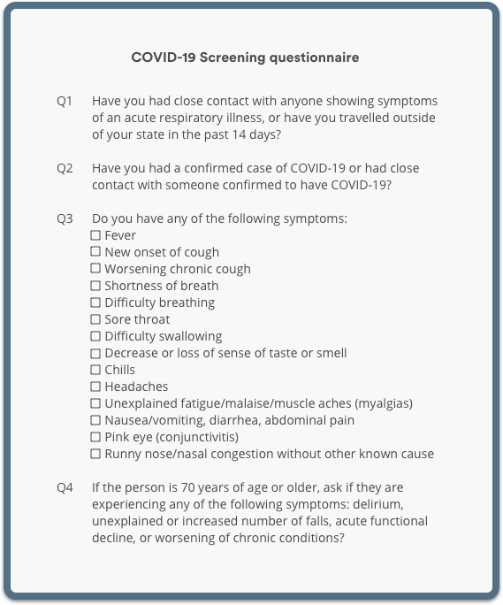

Reopening your dental practice in the wake of the COVID-19 pandemic can feel overwhelming. No matter how many guidelines and evidence-based protocols are released, there are still some pressing questions. We wanted to help answer those remaining questions. We reached out to our Opencare network of dentists, hygienists, billing specialists, and patients to compile insights and tools that will help you successfully re-open your practice.
Intro
The impact of COVID-19 on dentistry has proven to be a challenge. But as economies slowly open up, and governments begin to give the go ahead for dental offices to reopen, consider this an opportunity to reshape your practice.
It is important to follow evidence-based guidelines from organizations such as the American Dental Association and the Royal College of Dental Surgeons of Ontario to ensure safety for your patients. But there are some things these guidelines can’t answer. Opencare has a large network of dental professionals. We leveraged our community and collected real insights from patients,top-rated dentists, highly-experienced billing specialists, and industry experts across North America to answer the questions the guidelines couldn’t.
Consider this e-book your guide for reopening. You’ll find:
- Insights from real patients, focusing on their concerns for going back to the dentist in the wake of COVID-19
- What to expect for the new dental experience
- How to provide proper training to keep your staff safe
- Tips for unlocking cash flow for your practice
- How to alleviate financial stress from limited patient flow
- How to come back as the practice you’ve always wanted to be
- How to retain loyal patients

Reopen strong and make your practice perfect?
Chapter 1:
What dentistry will look like post COVID-19
COVID-19 brought an unheard of shift in everyday life. Controlling the spread of the virus became a global priority, bringing most industries to a halt. The public shifted their attitude towards infection control and sanitization. It heightened people’s sense of fear around the spread of germs. You’d be hard-pressed to find somewhere with more rigorously set up for infection control than a dental office, but there is still a sense of fear looming over getting back in the dental chair. You will need to adapt your patient experience to give them absolute confidence that they are in the safest hands possible.
The patient experience: Now vs then
Before COVID-19, a patient would walk into the dental office, speak to the front staff. The staff may even shake hands with the patient to make the patient feel comfortable. The patient would typically sit in the waiting room next to others, possibly reading a magazine or if they are a child playing with toys until the dentist calls them in. Once in the dental chair, the dentist would explain all procedures with caring and calming facial expressions to make the patient feel at ease.
With the current climate, patients will be screened by phone ahead of time and answer questions to ensure they don’t have any COVID-19 symptoms. Dental offices are likely to allow only single patient entry. The patient would be asked to arrive wearing a mask and will interact with hygienists and front staff who are also wearing masks. The patient will no longer have the comfortable waiting room experience. Magazines and toys will be a thing of the past, as these items are difficult to disinfect. Payment methods will likely be touchless only allowing for credit card or Interac. Make sure to let your patients know of this in advance of their visit. Once in the chair, the dentist must rely on the tone of voice they use to make the patient feel comfortable and at ease.
Advice from the dental community
We spoke with top-rated dentists across North America on their advice for navigating the new patient experience.
Former Vice President of the Royal College of Dental Surgeons of Ontario, Dr. Natalie Archer, thinks that teledentistry is a great and innovative way to conduct initial patient screening for non-emergency patients. It keeps you and your staff safe while still providing excellent patient care. Patients also appreciate the convenience, ease of use, and speedy service.
Is teledentistry the new normal? See Chapter 5.
Dr. Jeanie Luong, a top-rated Toronto dentist, advises to utilise resources from the dental community such as webinars where you can hear advice from dental offices who have reopened in other countries. Dr. Luong’s office is taking the time to provide her staff with vigorous training to ensure precautionary measures are being put in place, assuring infection control of the highest standards. Additionally, she has implemented increased screening, which includes temperature checks for each patient.
She’s also implemented engineering controls to reduce exposure to the virus, such as plexiglass barriers. Each operatory room has been sealed with plastic doors, and her appointments are spaced out to minimize contact. One of the most significant changes made at the office is introducing hand scaling. Before COVID-19 hygienists may have used a Cavitron that vibrated to break off plaque physically, we expect this may be something patients will not see for a while.
The final control mechanism to protect staff and patients is increased use of PPE, which includes face shields, gowns, and N95 masks (precautionarily).
"In these uncertain times, I can only focus on things that I have control over, which is staying calm, evaluating information critically, and being available to my patients any way I can. I encourage dentists to stay in touch with your patients and your team members." - Dr. Jeanie Luong
Dentistry will not look or feel the same for even a few years, as the impact of COVID-19 will leave the public with a heightened fear of viral spread and germs. But by providing the best patient experience, being consistent with your sanitization protocols, and communicating effectively with your patients, you will be ready to reopen and provide the essential healthcare that your patients deserve.
Chapter 2:
Why focusing on the patient experience is more important than financial recovery
In March of 2020, the dental industry was hit hard when health authorities recommended dentists stop all routine visits. Without a consistent patient flow, many offices had their revenue cut off.
What makes dentistry unique?
Dentistry relies on a unique relationship between supply and demand. Unlike many businesses, the COVID-19 pandemic won’t result in a “loss” of revenue, but rather a “deferral” of revenue. To put this into perspective, a restaurant will be directly losing revenue for each meal they don’t serve. The person who would have gone to the restaurant to have a drink and some food is putting that transaction toward making food at home or getting take out. In a similar sense, a gym will lose revenue every month they can’t fulfill memberships to their customers. Dentistry is unique because it provides a preventative service. COVID-19 didn’t stop the demand for dentistry; it only deferred it. Toothaches, cavities, cleanings, gum problems, and impacted wisdom teeth don’t just go away, but instead, they get pushed into a backlog. Dentists should take comfort in the fact that COVID-19 or any major crisis will never reduce the demand for preventative healthcare.
As we recover from the pandemic’s impact, it is important to understand that your revenue was not lost, only deferred. Take the time you have to prioritize your patients. The value of the services you provide remains high, and there is a backlog of eager patients waiting and needing to see you. Look at it as an opportunity to re-shift your strategy and create the best patient experience.
Optimize your appointment flow
→ Address your backlog:
Make sure every patient who had an appointment cancelled or deferred gets rebooked. Patient loyalty is key to driving their lifetime value, which will guarantee future revenue.Make sure to leave time each week to service patients who have been waiting to be seen. Ensure preventative measures are taken as soon as possible for your patients.
In a June 2020 survey of our patients across North America, 66% noted that they had an appointment cancelled due to COVID-19, and 91% of them intend on rebooking once dentists reopen.
→ Space out your appointments to abide by sanitization best practices
Leave time in between each patient to thoroughly follow the recommended protocols for infection control. Take careful steps to ensure your staff is trained, and your equipment is properly sanitized. Check out our list of best practices for sanitization in Chapter 3. Many dentists have expressed the need to extend office hours to accommodate spaced out appointments. Please do this within reason. Make sure you are taking breaks and only ramping up your services to a limited degree. While cash flow remains a priority, it’s important to ensure each patient is receiving thorough and quality service, rather than rushed appointments from a dentist experiencing burnout.
→ Write out your services and prioritize them
Dental emergencies and treating immediate pain will likely take precedence over routine check-ups. However, it is essential to prioritize your services and use that as a guide for scheduling new patients. Cosmetic work and teeth whitening should take a back seat to preventative and urgent care needs.
→ Use a patient booking platform to do your scheduling for you
You should expect inconsistent patient flow in the wake of the pandemic. Booking patients may take time and require some patience as businesses start to reopen. A booking platform helps guarantee patient flow, connects you with quality patients, and makes the scheduling processes more efficient for your front office staff.


Communicating with your patients
"As a profession, we need to do our part to communicate with patients to earn their trust. We’re going to be responsible stewards of their safety. I believe that’s going to have a huge impact on getting things as close to normal as possible" - Dr. Jeanie Luong.
There are many easy and low-cost ways of keeping in touch with your patients during this time. It’s imperative to be there to reassure and build trust with your patient base.
Email engagement
A high-quality experience for your patients begins before they enter your office. Keep them engaged by reaching out to them through email. A Hubspot study found that 80% of business professionals believe that email marketing increases customer retention. More than 50% of U.S. respondents check their personal emails more than ten times a day, and it is by far their preferred way to receive updates from brands. The ADA has provided a great guide on drafting your first “Welcome Back” email to patients. Engaging your patients this way will strengthen trust and communication with them.
Need ideas for COVID re-engagement emails? Try these:
→ A reassurance email on sanitization→ A personal and informed welcome back email
→ Tips and advice for at-home oral wellness
→ A self-diagnosis tool for common problems
→ Dental emergency guidelines
→ A survey to help gauge their feelings about going back to the dentist
→ Resources and content that you find useful from dental thought leaders
Leverage social media
Social media is a great way to get to know your patients and keep them engaged when they’re not in your chair. 90% of North Americans between 18-29 use social media, so if your practice isn’t using it you’re likely missing out on opportunities to reach these patients.
Here are some great ways to use social media to engage your audience about reopening after COVID-19:
→ Go live! Interact with your patients in real-time
→ Use the poll and answer features on Instagram Stories to get real input from your patients.
→ Post useful and insightful tips
→ Do office tours and demonstrate the sanitization measures your office is taking
→ Use the direct messaging feature to speak personally with patients who might have questions
→ Try to post consistently (2-3 times per week) to optimize engagement
Survey patients
Surveys help gauge your patients’ personal feelings by streamlining qualitative data into quantitative answers for analysis. Regularly surveying patients can help you understand issues that should be dealt with promptly or adjust your strategy for reaching out. It can also help you see larger stories and insights about how the pandemic changed your patients’ mindset towards dentistry.
There are many ways to survey patients. Websites like SurveyMonkey and Qualtrics provide survey tools for businesses, but sometimes at a cost. Practices on a budget can also access free survey tools through Google Drive.
Wellness for you: Financial aid and mental health resources.
There are many resources available for financial aid from both the Canadian and U.S. government. Are you a small business? Are you a family-owned practice? Are you a woman who owns a business? There are amazing resources available during the COVID-19 pandemic to support you financially.
Your wellness is also a priority. There are also many mental health resources available. We encourage you to share the below resources with your team, loved ones and friends within the dentistry industry. We are in this together, and prioritizing mental health is important. We hope you find these resources helpful, and we’re here to support you in any way we can.
Click here for helpful resources.Chapter 3:
How to ease your patients’ minds: Best practices for patient safety
It’s no secret that this global pandemic has shaken up life. People have been staying at home and social distancing from their family and friends. Many of your patients are worried about what the future holds, and wondering if it’s safe for them to leave their house. Your job as a medical practitioner is to help guide your patients through this time of change.

Are your patients ready to go back to the dentist?
We want to help alleviate the fear of going back to the dentist. Many industry experts assumed that the pandemic would kill people’s enthusiasm to return to the dentist due to the nature of aerosols in the dental office. However, results from a recent June 2020 survey we conducted with over 2000 patients across North America tell a very different story. 42% of respondents said they plan to visit their dentist within three months of their office being reopened, with 34% of those respondents saying they would visit as soon as possible. Only 5% of respondents noted they would only go if it’s an emergency.
Of the respondents unsure if they’ll go back to the dentist anytime soon, 45% said they’re waiting for life to go back to “normal,” with 42% answering that they’re concerned about getting COVID-19.
Patients are keen and excited about getting back to the dentist. So your priority is no longer to alleviate the fear of going to the dentist, but rather make your patients feel 100% safe when they get in your chair.
What can you do to make your patients feel safe?
We asked Opencare patients what they feel the minimum requirements a dentist must do to make them feel safe for a routine cleaning/check-up:
- 85% said they’d want to see their dentist wearing increased PPE such as an N95 mask, face shield, and gloves
- 59% said they’d like to see masks available for patients
- 58% said they’d like to see contactless sign-in
- 49% don’t want to be in a waiting room
- 40% want to see air purifiers in the office
“I worry that at the dentist, there are dental tools placed in our mouths, and dentists are in close contact with other people and hard surfaces that may carry the virus. I also have concerns with how long offices will continue with extra cleaning,” said one respondent from the Greater Toronto Area.
Patients are nervous, and understandably so. But, there are things you can do to ease their mind.
1. Visible sanitization
The best thing you can do to ease your patients’ minds is to make sure that sanitation measures are strictly followed. Masks, hand sanitizer, and visible sanitization measures should be done at a minimum in front of your patients to show that they’re safe.
When asked about what would make them feel safe, one survey respondent said, “Reassurance of how all tools cleaned and sterilized. Make me feel like what you’re putting in my mouth is super clean.” Even though dentists have already been extremely vigilant about sanitation, it’s important to talk about it and let your patients know the steps you’re taking to keep them safe.
As you open a new pack of tools, say, “These tools have been sanitized using our sanitization process which includes…”. That little bit of information goes a long way when it comes to patient reassurance.
2. Minimize interactions with people
Social distancing is one of the main ways we can all do our part to stop the spread of the virus. Your patients want to avoid unnecessary contact with people. One of the ways you can do that is by allowing for contactless check-in, plexiglass between your reception and your patients, and making sure that your waiting room is always empty.
Many patients worry that there will be a rush of visitors to the dentist, saying, “I imagine dentists will be crowded, so I won’t plan on going until I feel things have slowed down.” To combat this, send an email to your patients or call them and let them know what you’re doing to minimize foot traffic in your office.
One great suggestion from our survey respondents was: “A virtual waiting room, please, so I don’t have to wait in a line outside the office.” Now is a great time to use technology to your advantage. Apps like Opencare, to communicate with your patients and iPads to check-in. Ask your patients to wait in their car and give them a call or text when it’s time to come in, so only one patient enters at a time.
3. Display safety standards and proof of infection control
When we asked our Opencare patients how they felt about their dentist having proof of infection control and following proper sanitation guidelines, 29% said they felt confident and trusted their dentist to follow proper protocol. Another 40% said they felt confident, while 18% said they felt worried, and 12% said they felt anxious and would want to see certification or proof.
Much like our first suggestion, make safety visible to ease your patient’s mind. Display signs outlining symptoms of COVID-19, reminders to sanitize and wash hands and even email your patient ahead of their appointments or message them on Opencare with a “What we’re doing to keep you safe message.
Be the expert for your patients
As a dentist, it’s your role to keep your patients up-to-date on dental regulations, new data and information, studies, and anything related to their oral wellness and COVID-19. Get ahead of the information and share it freely with your patients. You could do this by being active on social media or sending out a monthly email newsletter.
When we asked patients who they go to for information for questions and concerns about their oral health during the COVID-19 pandemic, 21% said they call their dentist, with 66% saying they turn to Google. A small number of patients turn to friends and family (7%), with only 2% relying on social media and other avenues.
Patients want to hear from their dentist. In times of uncertainty and during a health crisis, your patients are going to look to you for the most accurate information. They trust you with their oral wellness, and it’s important you instill confidence in them. By doing so, you can set yourself apart from your competition and excel in patient excellence.
Chapter 4:
Keeping your office’s engine safe and supported
Your team is the backbone of your practice, and it’s crucial to keep them safe every day they step into your office to work with patients. Chances are, your team is a little bit wary about returning to work in light of the Covid-19 pandemic.
Confidence is key, and the first step to keeping your office safe is making sure that you are doing everything possible to keep your office clean, your patients safe, and your employees trained and equipped to do the same.
How to keep your staff safe
1. Train your staff on national dental regulations and safety precautions
As the saying goes: knowledge is power. The best thing you can do to keep your staff safe is to make sure that they’re informed about everything they need to know about COVID-19. It’s your priority to ensure that everyone at your office understands how to keep themselves,their colleagues, and patients safe.
The first step is being up-to-date on the dental guidelines relevant to your region.
→ American Dental Association (U.S.)
→ Royal College of Dental Surgeons of Ontario (Canada)
2. Equip your staff with all the supplies they need
Make sure your practice has fully stocked sanitizing stations, the right level of disinfectant for cleaning, personal protective equipment (PPE), physical barriers at contact points, and any other measures you’re taking to keep the office free of viruses. Running out of any of the required necessities could not only affect the safety of your employees or patients, but it may mean that you must close your practice until new inventory arrives.
3. Enable your staff to turn patients away if they’re unsure
Turning away a potentially sick or at-risk patient might feel overwhelming to your employees like your front desk staff However, with pre-screening over the phone and screening upon entry (like temperature checks), your front desk team is the first contact patients have with your practice. They are the gatekeepers of who should be able to make an appointment, and who comes through your front doors. While regulations state that you should turn away anyone deemed at-risk, it can still be a daunting task.
The best thing you can do is support your team when they make judgement calls and let them know that you trust their decisions no matter what. Let them know that you have an open door policy if they have hesitations or questions when it comes to booking patients. Remember, it’s okay to say no to a patient – it’s not worth the risk of bringing the virus into your practice.
4. Empower your staff
Let your staff know that you support them in the decisions they make. If they feel unsafe in a work situation, like a colleague coming in sick, make it known that you have their back without any repercussions. An open and honest team is a safe team. Facilitate a safe space where your staff feels comfortable to address their needs and concerns regarding health and safety.
5. Be diligent with your staff
Screening your staff daily is an important measure that will keep your entire team (and your patients) safe. It’s imperative to ask the COVID screening questions every day before your team comes into the office. By doing so, you’re keeping the lines of communication open, while encouraging employees to share if any circumstances have changed surrounding their health. Do not let employee screenings slide. A thorough team is a safe team.
Resources for your staff
It’s your job to ensure that your team has access to the information and tools necessary to keep both them and your patients safe. Aside from supplying the right inventory and tools for your employees, here are a few other things you can do to make sure your staff have all the resources they need.
1. Send out a weekly COVID-19 information email
Communication is key; we suggest sending out weekly updates to your staff with a focus on office sanitization procedures, booking patients, screening, and all other protocols. Celebrate the small wins by congratulating staff on all their hard work. Call out the Safety Heroes, and never shy away from discussing opportunities to improve. Encourage a team dialogue by allowing your employees to contribute as well. Include links to new research about COVID-19, specifically related to dentistry, so everyone in your office stays knowledgeable.
2. Stay up-to-date on new regulations and protocols
You should be the first person who knows of any changes in safety, sanitation, dental protocols, and government regulations for the industry. When a significant change is announced, alert your staff. You can do this by adding a section in your weekly email with relevant updates that aren’t time-sensitive but are worth knowing.
3. Have sanitation reminders
Pick a song, ring a bell, or whatever works for you, but we suggest assigning one of your team members to remind staff to stop what they’re doing (if possible) and execute safety protocols like washing their hands and sanitizing their station. Much like how grocery stores have in-store announcements reminding their employees to wash their hands. . Do the same in your office! This newly adopted procedure will help your patients feel at ease, too.
4. Have posters around the office with information for public health and COVID-19 hotlines
Although it may seem like common knowledge, it’s important to have posters that list the signs and symptoms of COVID-19 with information outlining who to contact if anyone is showing signs or symptoms. These posters should be visible around your office. We suggest having one in your waiting room where patients can reference as well.
5. Consider new technology and tools
Technology can keep your team safe by facilitating contactless interactions. Things like appointment bookings, streamlining insurance claims, and teledentistry are all available to limit the time patients need to spend with your front desk staff. Now is the time to implement new tools that will keep your team safe and also more efficient. We’ll talk more about technology and tools in Chapter 7.
6. Have benefits to support your staff
While you should let your employees know that they’ll have access to sick leave should they fall ill, you can also provide them with other benefits. One option is to increase their insurance Health Care Spending account to help cover things like grocery delivery, laundry services, and other COVID-19 social distancing services. It’s up to you to decide how much your practice can help, but it’s important to let your staff know that you support them during this time.
Remember, your team is the backbone of your practice. They’re the ones who are going that extra mile to make sure your practice and patients are safe. Your job as a dentist is to enable every single employee and encourage them to take the lead on their safety and the safety of the practice.
Chapter 5:
Is Teledentistry the new norm? Best Practices for Screening Patients
Teledentistry is an emerging industry now that COVID-19 has challenged dentists to think about the future of their practice. Teledentistry allows you to screen patients before their visit, to ensure they aren’t sick or been exposed to COVID-19. Teledentistry will also enable you to understand your patients’ dental problems and screen them accordingly to serve them best.
What does teledentistry look like?
Live video - Communicating with patients via secure video chat
Remote patient monitoring - Using virtual tools to collect personal health and medical data from your patient
Mobile health - Leveraging cell phones and tablets to communicate with your patients
Store-and-forward tools - Teledentistry will most obviously be used for COVID-19 screening before a patient makes an appointment. Still, it can also be used for emergency and urgent care needs as well as non-essential care. Non-essential care via teledentistry can be things like patient advice or counselling, assessing and evaluating patient needs, monitoring or follow-up after procedures, and consultations on treatment planning.
Is teledentistry the new norm?
Screening virtually is an excellent and innovative service and likely to continue to rise in popularity for dentists. As dental offices get more comfortable with using teledentistry technology to interact with patients, one can expect that its uses will go beyond screening patients for COVID-19. We live in a highly connected world, and many patients. Especially now, in a world where people feel much safer limiting in-person interactions and are more comfortable using technology.
Teledentistry is a great tool to consult online or over the phone to ease your patient’s minds. You can save time, by keeping bums out of seats that don’t have to be there. If you can consult or plan treatments over the phone, then that means you can have patients in your office getting procedures done and schedule the rest accordingly.
Teledentistry will be something your patients will come to expect. For example, chatbots are an effective and fast way to screen appointments, while patients appreciate the convenience and speed.
Will teledentistry ever truly replace the check-up?
Yes and no. Teledentistry is most useful for patients who have already been into your office to see you. Without any clinical measurements or past x-rays, it’s hard to advise patients calling in. It’s a great tool for screening, but for examinations, it has limitations. Teledentistry is a great door opener for information and a supplement to in-person appointments, but it likely won’t be replacing in-person dentistry anytime soon.
However, there are opportunities for dentists to be assisted by teledentistry and digital dentistry. Some parts of the appointment and check-up process are conveniently solved and easily replaced by teledentistry, but for actual exams, in person will still be the norm.
COVID-19 teledentistry screening checklist
When you’re screening over the phone, it’s crucial to ask the COVID-19 patient screening questions outlined by your Ministry of Health guidelines.
COVID-19 screening results
If they respond to ALL of the screening questions is NO: COVID-19 Screen Negative
If they respond to ANY of the screening questions is YES: COVID-19 Screen Positive
After mandatory COVID-19 screening, you can also use the teledentistry screening to screen your patients for anything relevant to booking them in for an appointment. You can use this time to help your office prioritize booking or decide whether you want to take them on as a new patient. We’ll talk more about prioritizing patients in Chapter 7.
Optional questions:
- Are you in immediate pain or discomfort?
- When was the last time you visited a dentist? ( (Especially if they’re not a patient from your practice)?
- Are you comfortable following office safety protocols like wearing a mask and having your temperature taken?
Using technology to improve patient flow.
Technology helps you screen patients for safety, but it also acts as a buffer to help prioritize appointments. With COVID-19 quarantine measures being lifted, dental offices will likely see a spike in patients wanting to see you. It’s important to understand how you would like your office to prioritize bookings and use technology to improve patient flow.
Here are a few tools that can help improve patient flow:
- Mobile health screening - Invest in an app to help you connect with your patients from their mobile devices.
- Online booking - Use a booking platform to communicate with patients and book all appointments online.
- Tablets - Allow a contactless check-in using a tablet, rather than requiring them to speak with your staff. It’s safer for both your team and the patient, and it’s quick and easy. Just remember to sanitize the tablet after every use.
- Chatbots & social media - Chatbots are a tool you can use on your social media messaging systems, like Facebook messenger, that can direct patient questions to the right portal, like your website for booking or an app for screening.
- Electronic health records (EHR) - Having electronic records will help your team be more efficient like running insurance checks.
Technology requires both time and money, but it can help you maximize your team’s productivity, improve patient experience, and generate more revenue in the long run. COVID-19 has changed how we all interact, but there’s no better time to implement innovative tools into your practice.
Reopen strong and make your practice perfect?
Chapter 6:
Managing cash flow and unlocking revenue
There are many new challenges dental practices are facing due to the current COVID-19 pandemic. These challenges present an opportunity to analyze previous practice behaviors, search for improvements, and implement new procedures to increase productivity and efficiency.
An essential focus of any dental practice is to continue to generate and to maintain a steady revenue. The bread and butter of most practices is the acceptance of all insurance plans; this generally accounts for 90% of the practice’s incoming revenue, with 15-20% of patients paying cash. Any disruption in this cash flow can cause serious setbacks, especially during this difficult time. To avoid any potential issues, here are four steps to ensure steady cash flow to your dental practice during the COVID-19 pandemic:
1. Audit Outstanding Insurance Claims
Regular auditing of aging insurance accounts can reveal numerous outstanding claims at risk of exceeding a timely filing. If these insurance accounts are allowed to extend beyond the established time limits, you could risk losing thousands of dollars in revenue. Here are some of the best auditing practices:
- Develop an auditing scheduleA routine auditing schedule and procedure in your practice will not only save you time and money but also earn your practice increased revenue.
- Be aware of filing time limitsA practice well versed in filing time limits has a good basis when developing an auditing schedule. For example, government plans and Ameritas usually have a timely filing limit of 90 days, while commercial plans typically have a limit of 12-24 months. Keeping these different time limits in mind will assist you in keeping your practice’s schedule on track and will also avoid increased workload on staff by unnecessary auditing.
- Check for completion of electronic transmissionsSometimes these fail to submit, and transmissions do not make it to the clearinghouse or insurance company. Without a timestamp from your clearinghouse, you can lose out on a timely filing appeal and money for those claims.
- Gather missing documentationOther claims could be on file but still pending additional documentation, which can easily be scanned and emailed for quick processing.
- Monitor orthodontic claimsKeep in mind that some carriers require an orthodontic statement to receive quarterly payments.
2. Check patient balances
Uncollected balances and cancelled/missed appointments are a source of lost revenue. Many people are experiencing significant lifestyle changes in this current environment. They may simply need a reminder about any upcoming appointments, as well as previous due balances or co-pays.
- Consider sending daily statementsRegular statements can be useful for patients that make partial payments or for any balances resulting in a patient co-pay after insurance has paid.
- Review cancelled treatments/approaching patient appointmentsConsider asking for a deposit to secure appointments and to remind patients of their upcoming due balances.
- Explore a membership program/financing option.Some patients are now experiencing hardship, like job loss. Address this by setting up financing options.
3. Adjust insurance/practice fees
The majority of insurance fees are calculated by the yearly utilization and cash fees reported by each dentist in a given area. If your cash fees are hovering around the 40% range and your neighbor/colleague is floating around 80%, then your practice is not on an even playing field. You could be at risk of not receiving higher-fee updates, unlike your neighboring dental practice.
- Perform a yearly check-upEstablish a protocol to check your UCR “cash fees” to even out the competitive field.
- Consider how your practice is networkedAre you contracted with the highest paying network? Insurance carriers will compare how many networks you are sharing and pay the lowest fee possible.
- Increase feesConsider increasing fees 5%-15% across-the-board to compensate for PPE costs.
- Target high-dollar proceduresHigh-production patients should take up at least 50% of your schedule over the next eight weeks. Fill in schedule gaps with smaller and less urgent procedures.
4. Apply updated CDT codes
A successful dental practice knows the value of being familiar with current CDT codes. The ADA has announced newly updated guidelines designed to aid practices in adapting to COVID-19. Keeping your practice on track with updated coding knowledge as well as how to implement new codes in billing practices ensures revenue is being generated for procedures and work being completed during unique situations encountered during the COVID-19 pandemic. A couple of other notable codes include:
- D1999 - COVID-19 PPE costAs practices continue to follow newly established guidelines to promote health and safety within the dental practice, this can help meet PPE resource needs.
- D9995/D9996 - tele-dentistry.Some carriers will pay for a teledentistry code or a D0140 when billed in conjunction. Both codes must be billed together to be considered for reimbursement. Check with your state insurance policies to see if teledentistry is allowed in your state.
We know this is a difficult time, and decreased patient flow has brought new challenges for earning the money your practice needs to thrive. Staying on top of simple audits, patient balances, and balancing your fees can help unlock the cash flow you need to support your dental office.
Chapter 7:
Becoming the practice you’ve always wanted to be
Do you want to be the practice you were? Or the practice you’ve always wanted to be?
The COVID-19 pandemic drastically shifted our reality and no one could have predicted this new normal. In order for any business to survive the current landscape, one thing’s for sure, you must embrace change and adapt. As dental practices have been given the go ahead to reopen with new regulations in place, you have now been challenged to rethink your business. And although this can feel overwhelming, take a moment to remind yourself that the setback from the pandemic could result in a brilliant comeback. You’ve been given the opportunity to reinvent your practice. And we have the optimal faith that you will succeed, because one thing’s for sure, dentists and their staff are a resilient bunch.
Become the practice you’ve always wanted to be
Aside from added sanitization procedures and regulations, now is the time to implement change for the better. Ask yourself what other impactful modifications can be implemented to your practice that will benefit both your staff and patients.
Now is the time to shift your mindset when it comes to the overall patient experience. Not just during the pandemic but well beyond that. We’re not talking only about safety. We’re talking about thoughtfully selecting which patients you should partner with to grow your practice stronger.
On top of that, your practice must run efficiently and safely to bounce back from the pandemic. This might mean implementing new technology or processes that you weren’t able to before. You can use this time of change as an opportunity to reimagine your practice.
Let’s begin by focusing on patient care. When a patient walks into your office, you must ensure that both their oral health and physical safety is top-of-mind. Your patients want to be reassured that you successfully (and creatively) adapted the new COVID-19 sanitation practices into your practice. They want to see that you’re focusing on the things that matter.
You also have a responsibility to your staff, as they’ve made an investment in you and your business. They want to see changes that make everyday work life run efficiently and safely. That could mean investing in new technology and establishing new procedures.
So, how do you reopen successfully? Let’s explore.
The ideal patient
At Opencare, we help build successful partnerships by matching dentists with high-quality patients. We encourage our patients to be picky about the dentist they choose, and we encourage our dentists to do the same when it comes to patients.
Why is choosing the right patient important?
It’s important to think about what a good quality patient means to you because not all patients are created equal. Some patients build your business, while others can be a drain on it. Dentists need to understand the difference between the two and know what to do with both types of patients.
How do you find the right patient? Start by taking advantage of the new pre-screening regulations. Start off by asking the general COVID-19 screening questions, and then move into a quick discussion / consultation. It’s a great opportunity to determine whether their oral health issues can be effectively treated and managed at your practice.
The bottom line is this: You have limited time to see patients, and you want to make sure you’re bringing in patients that are high value and need work done.
What types of patients do you want sitting in your chair?

Meet: The Wellness Seeker
At Opencare, we call the ideal patient a Wellness Seeker. A Wellness Seeker is someone who:
- Prioritizes their health and wellness
- Takes care of themselves physically
- Cares about nutrition
- Is proactive about the things that will benefit their long term health
- Often millennials and young adults who believe they can and deserve to have the life they’ve always dreamed of. They set big goals for themselves and plan to live long and happy lives.
Wellness Seekers are the type of person who goes to yoga once a week, cares about the food they eat, and makes investments in their health in other ways, like seeing a naturopath or other health and wellness professionals.
These patients are important to your practice because they’re going to trust you as a partner in their wellness. They work with you to take proactive steps for their oral health. They will often come to you for more than a pain that pops up. Wellness Seekers, don’t waste your time!
Meet: The Couch Potato
Counter to the Wellness Seeker; we have the Couch Potato. These patients might have a mouth full of cavities and work that needs to be done, but they’re not the high-value patients you may think they are. Couch Potatoes are people who:
- Are not proactive about their health and only seek healthcare professionals when they have an issue
- Only take care of their mouth by visiting the dentist
- Don’t care about nutrition or exercise
- Don’t have the intent of bettering their lives or health
These patients ignore their health until their body tells them otherwise. They may come to you and need work done, but they won't listen to you and actually follow through. They waste your time because they come into your office for work when needed, but don’t engage with you any other way. They take up time that you can be spending with Wellness Seekers.
High intent + high needs = the best patient for you
High intent patients are patients who care about their health, wellness and doing the right things to live a healthy life.
The amount of work part of the equation means just that: how much work does a patient need? Needs can range from a routine cleaning to fillings, to other oral health needs.
While these two things together, high needs + high intent make the absolute perfect patient, it’s all about balance. You don’t need both together to have the right patient for your practice.
Here are a couple of scenarios you might encounter:
Scenario one (Low intent + high needs): You have a patient who needs a lot of work but doesn’t overly care about their health. They’re a bit of a couch potato, but deep down you can tell they want to do better. You partner with them to discuss their oral wellness goals and point them in the right direction for overall wellness. You send them resources via email, engage with them on social media, and send them offers via your monthly marketing outreach. You eventually turn that patient from low intent to high intent.
Scenario two (High intent + low needs): You have a patient that lives an incredibly healthy life and high intent but doesn’t require more than their regular cleanings. However, you want to ensure that this patient is loyal to your practice because you know that they may need a root canal, crown, or other dental work down the line. Again, you partner with them about their goals and use your marketing efforts and engagement outreach to show them that your practice is serious about overall wellness and works with patients like them to achieve their goals. When that patient feels like something is amiss with their mouth, they come to you for a consultation and trust your advice.
It’s important to figure out where your patients are at in their intent + needs journey and meet them where they are. Building a relationship is vital for all dentists to do with their patients, and through doing that, you can better prioritize what patients to bring into your practice and which patients to deprioritize.
How to change your practice for the better
Now that you know what patients you need to build your practice, here are the things you can implement along with your other new COVID-19 strategies once you reopen.
1. Use screening to identify where your patients are in terms of intent.
While you’re screening patients for COVID-19, ask them about their last treatment and what they’re looking to have done. Have your front office team look up these patients and scan their history. Are they one of the patients that come to you frequently for a variety of needs? If so, book them in if they are all-clear of COVID-19 screening. If not, you can consider booking them further or turn them away if you feel they’re not a good fit for your practice.
Remember, your time is going to be extra valuable now that the new normal requires extra time with patients, cleaning and prepping, and screening. Don’t feel guilty about being honest with yourself or the team about whether a patient is right for your practice. Enable your staff to make the right decisions and support them in their choices.
2. Engage and encourage intent.
Use tools like email marketing, eBooks, special offers and discounts, and other marketing tools to engage Wellness Seekers and change the intent level of patients who aren’t quite there yet. As a practice, you want to build loyalty with your Wellness Seekers and find ways to convert your middle-of-the-road patients into Wellness Seekers.
Dentistry is a business, and it’s essential to connect with your patients and drive an elevated patient experience outside of just safety in the post-COVID-19 world. Be your patients’ partners when it comes to their health and wellness, and work with them to become the person they want to be by helping them realize their oral health goals, while guiding them towards a healthier lifestyle.
3. Instill confidence in your patients.
Your practice needs to live the wellness mantra and be the type of Wellness Seeker you hope to see in your patients. There’s no better time to get your whole practice onside with living a healthy lifestyle and being the image you hope your patients will follow. Your team has been working hard to get your practice ready to open safely, so thank them by rewarding them with healthy lifestyle incentives. Maybe it’s an incentive to buy a new piece of home fitness equipment, or a healthy lunch on Fridays. Big or small, help your team discover what wellness means to them and encourage it.
Change management and technology – How to use a crisis to create change for the better
Another silver-lining of this pandemic is that it’s forced dental practices to embrace change in a very short period of time. Like any business, it’s easy for us to get stuck in our ways. Your team is loyal, and you are loyal to them – but that doesn’t mean everyone is open to reimagining your practice and embracing new technology.
While you move to make the patient experience safer for your patients and your team, now is a great time to introduce new technology. Technology is a great way to make things safer, easier, more efficient, and allow your employees to focus on the right kind of patient experience. But not all technologies are created equal.
Bad technology wastes time and clouds the patient experience
Your employees are now spending time sanitizing, screening, and guiding patients through this new process. These are all important steps that should be prioritized. Your team should be spending time doing the things that matter, not the things that waste time like booking appointments on slow, old booking systems and wasting valuable time on the phone with insurance companies as patients start to cluster in the waiting room.
In our new reality, patient and employee safety is paramount and technological hiccups can make your practice less safe. Patients shouldn’t have to line up to pay a bill as your receptionist fiddles with the fax machine, asks for more documents, or calls insurance companies. Booking new appointments or checking in can be done online or on an iPad to avoid face-to-face interactions. The quicker you handle patients, the less time they’ll spend in the waiting room trying to socially distance themselves from others.
Implement change now to free up your employee’s time to better focus on patient experience (and make their job safer)
If your team is hesitant to use technology at work, maybe due to the fear of losing their job to a new tool, then now is the time to show them that technology can make their job safer and allow them to focus on the things they love doing (like helping patients).
You can use this time to show them how technology can make their job safer and easier. COVID-19 presents an opportunity to have conversations about implementing new tools and making changes that your team may have previously been resisting.
- Introduce technology to reduce the administrative burden.
- Explain how technology makes their job safer.
- Show that technology can allow them to spend more time with patients.
In the long run, technology will allow your team to provide more patient support, which will differentiate your practice from the one down the street. Patients have been embracing technology as they stayed at home, moved their jobs online, and interacted with their favorite brands and essential services digitally. The bottom line is, your patients expect technology when they interact with services. Embrace the new world and make your practice perfect.
Hopefully, this e-book gives you the insights that will help you reset your strategy and get you to becoming the practice you’ve always wanted to be. Many dentists will look at COVID-19 as a crisis; the smart ones will see it for the opportunity it is.
We encourage you to use these resources to support your practice during this time. Reopening won’t be easy, but we’re here to support you every step of the way.